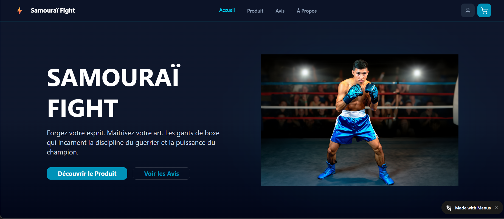

← Retour aux projets
Site E-commerce NO-CODE
> Manus IA | Reve.com | Gemini | IA Générative

Contexte : objectifs et problématique
L'objectif était de concevoir une plateforme e-commerce complète en un temps record en exploitant la puissance des outils d'IA.
Le défi était de passer de l'idée brute à un site fonctionnel et esthétique sans écrire une seule ligne de code traditionnelle (No-Code).
Rôle : votre contribution
J'ai piloté l'intégralité du workflow créatif et technique :
- Définition de la structure du site via Manus IA.
- Génération et édition du design via Reve.com.
- Rédaction des fiches produits et de la stratégie marketing avec Gemini.
Processus : étapes et défis
Le projet a suivi une logique de "Prompt Engineering" :
- Architecture : Utilisation de l'IA pour générer le sitemap et l'expérience utilisateur (UX).
- Design : Itération sur les visuels pour obtenir une interface moderne et cohérente.
- Intégration : Assemblage des différents modules IA pour créer un tunnel de vente fluide.
Défi : Assurer la cohérence visuelle entre les éléments générés par différentes intelligences artificielles.
Résultats : impacts mesurables
Le résultat est un site e-commerce fictif mais totalement opérationnel en termes de design.
Ce projet démontre ma maîtrise des outils IA modernes pour optimiser la productivité en entreprise.